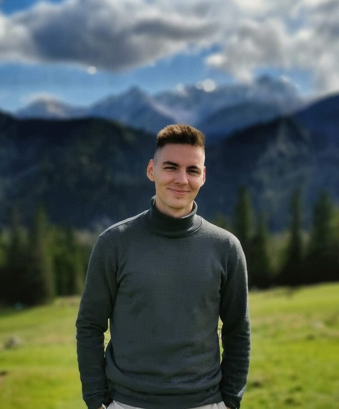
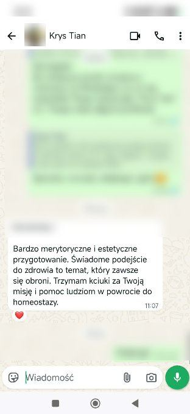
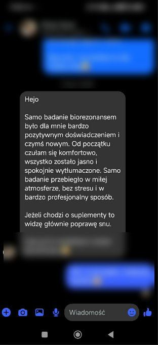
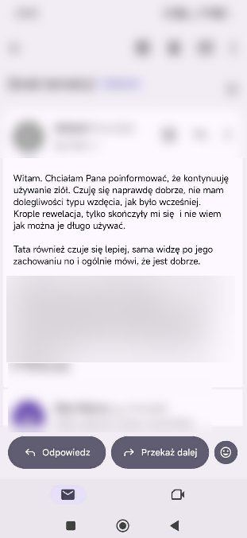
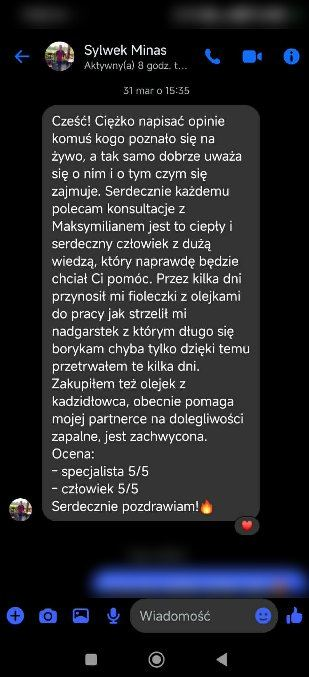
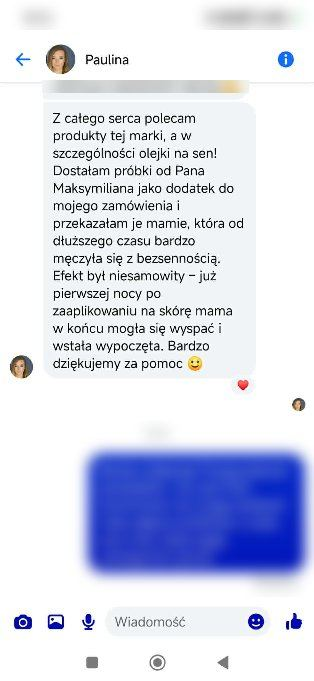
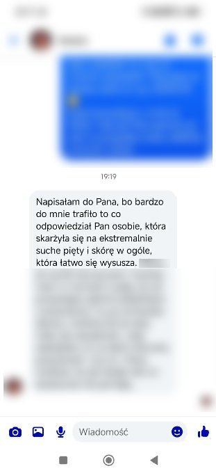
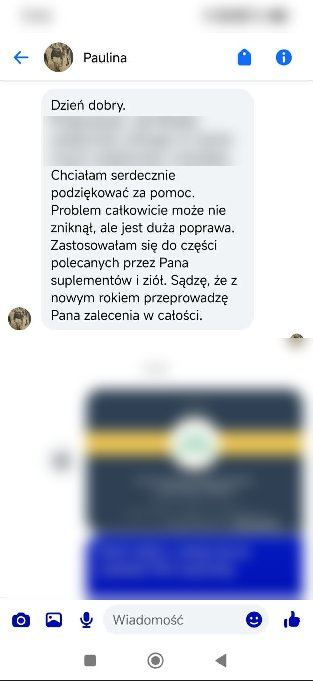
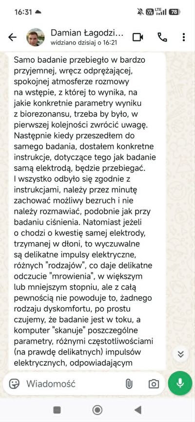
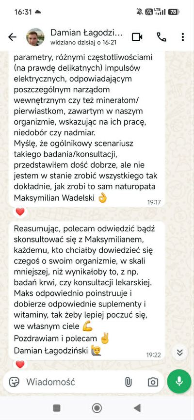

Naturopatia Online · Polska
Konsultacje naturopatyczne online łączące tradycyjną medycynę chińską (TCM), ziołolecznictwo, żywienie i suplementację. Naturalne wsparcie zdrowia, które pracuje nad źródłem — nie tylko nad objawami.
"Prawdziwa równowaga zdrowotna pojawia się dopiero wtedy, gdy zadbamy jednocześnie o ciało fizyczne i o emocje, które za nim stoją."
Większość konwencjonalnych podejść skupia się wyłącznie na objawach fizycznych — pomijając emocje, napięcia i wzorce, które często stoją za dolegliwościami. Naturopatia holistyczna patrzy szerzej. Łączę różne metody medycyny naturalnej — bo dopiero ich synergia może przynieść trwałe efekty. Ciało i psyche są nierozłączne — i tak właśnie je traktuję w każdej konsultacji naturopatycznej online.
TCM — ponad 3000 lat obserwacji ciała. Przepływ energii, równowaga narządów, wzorce niedoborów i nadmiarów. Podstawa każdej konsultacji online.
Zioła dobierane indywidualnie — np. zioła na tarczycę, jelita czy układ nerwowy — bez chemicznych wypełniaczy, zgodnie z Twoimi potrzebami.
Jedzenie jako informacja dla organizmu. Indywidualne podejście do żywienia uwzględniające TCM, stan narządów i Twoje cele zdrowotne.
Suplementacja dobrana precyzyjnie do potrzeb organizmu — uzupełnia niedobory, nie zastępuje podstaw zdrowego stylu życia.
38 esencji roślinnych działających na poziomie emocjonalnym — przy stresie, lękach i napięciach. Pomost między ciałem a psyche.
"Siła tkwi w połączeniu. Każda metoda wzmacnia pozostałe — TCM wskazuje wzorzec, zioła i suplementy go korygują, żywienie utrwala, a krople Bacha usuwają emocjonalne blokady."
📲 Umów konsultacjęNie jestem lekarzem i nie prowadzę diagnostyki medycznej. Oferuję naturalne wsparcie zdrowia metodami TCM i ziołolecznictwa jako uzupełnienie — nie zamiennik — opieki medycznej.
Opisujesz swoją sytuację zdrowotną przez WhatsApp lub email. Dopytuje o szczegóły, żebym mógł się dobrze przygotować.
Wypełniasz szczegółową ankietę zdrowotną. Wysyłasz też zdjęcie twarzy i języka — pozwala mi to przeprowadzić wstępną analizę metodami TCM.
W międzyczasie wykonujesz podstawowe badania krwi — morfologia, hormony, markery zapalne. Dają mi szerszy obraz Twojej sytuacji zdrowotnej.
Rozmowa przez WhatsApp lub mailowo — analizujemy Twój stan, historię zdrowotną i cele. Wyznaczamy razem naturalną ścieżkę do równowagi.
Po konsultacji wysyłam Ci szczegółowy plan działania w formacie PDF — zioła, żywienie, suplementacja, krople Bacha, jeśli wskazane. Pozostaję dostępny na Twoje pytania.
Wiem, że naturalne wsparcie zdrowia wymaga odwagi i zaufania — zwłaszcza gdy szukasz pomocy online. Dlatego oferuję coś, czego większość naturopatów nie oferuje — gwarancję zwrotu kosztów, opartą na realnych, odczuwalnych efektach.
Przystępujesz do konsultacji i stosujesz się do ustaleń przez uzgodniony czas.
Jeśli odczuwasz poprawę samopoczucia — gwarancja jest spełniona.
Jeśli ani samopoczucie, ani wyniki badań nie pokazują żadnej zmiany — zgłaszasz to do mnie.
Zwracam pełne 350 zł — bez negocjacji i bez pytań. Zero wyjątków.
Jednorazowa konsultacja z indywidualnym planem działania i możliwością zadawania pytań po sesji.
Treści na tej stronie mają charakter wyłącznie edukacyjny i informacyjny. Nie stanowią porady medycznej, diagnozy ani propozycji leczenia. Naturalne wsparcie zdrowia nie zastępuje konsultacji z lekarzem.

Jako naturopata online zajmuję się naturalnym wsparciem zdrowia, łącząc tradycyjną medycynę chińską (TCM), ziołolecznictwo europejskie, doradztwo żywieniowe, suplementację indywidualną i krople kwiatowe Bacha.
Moim celem jest dotarcie do przyczyny — nie tylko łagodzenie objawów. Wierzę, że trwałe efekty zdrowotne pojawiają się, gdy patrzymy całościowo — na ciało fizyczne i na emocje, które często stoją za dolegliwościami.
Umów konsultację naturopatyczną online — napisz do mnie na WhatsApp lub maila, opisując swoją sytuację zdrowotną. Im więcej szczegółów, tym lepiej mogę się przygotować.
Screenshoty prawdziwych wiadomości









Konsultacja odbywa się przez WhatsApp lub mailowo. Po kontakcie wypełniasz ankietę zdrowotną i przesyłasz zdjęcie twarzy oraz języka do analizy metodami TCM. W międzyczasie wykonujesz podstawowe badania krwi. Po rozmowie otrzymujesz indywidualny plan działania w formacie PDF — zioła, żywienie, suplementacja i krople Bacha, jeśli wskazane.
Konsultacja naturopatyczna online kosztuje 350 zł i obejmuje analizę stanu metodami tradycyjnej medycyny chińskiej, indywidualny plan działania oraz możliwość zadawania pytań po sesji. Konsultacja objęta jest gwarancją zwrotu kosztów.
Naturopatia, w tym tradycyjna medycyna chińska i ziołolecznictwo, skupia się na szukaniu przyczyny dolegliwości, nie tylko łagodzeniu objawów. Przy Hashimoto może to oznaczać wsparcie organizmu naturalnymi metodami — regulowanie pracy układu trawiennego, redukcję stanów zapalnych i przywracanie ogólnej harmonii organizmu poprzez indywidualnie dobrane zioła, żywienie i suplementację.
Krople kwiatowe Bacha to 38 esencji roślinnych działających na poziomie emocjonalnym. Stosowane są przy stresie, lękach i napięciach emocjonalnych jako wsparcie w przywracaniu wewnętrznej harmonii i równowagi.
Naturopatia stawia na szukanie źródła dolegliwości, a nie tylko łagodzenie pojedynczych objawów. Zamiast jednego rozwiązania stosuje się kilka naturalnych metod jednocześnie — TCM, zioła, żywienie i suplementację — żeby wspólnie regulować organizm i przywracać mu naturalną równowagę.
Materiały edukacyjne o medycynie chińskiej, ziołolecznictwie i naturalnym wsparciu zdrowia — artykuły już wkrótce.
Tradycyjna medycyna chińska patrzy na Hashimoto przez pryzmat niedoborów energii i zaburzeń przepływu Qi. Jakie zioła na tarczycę warto rozważyć i jak naturalnie wesprzeć jej pracę?
Wkrótce dostępny →Jelita to drugi mózg. Jak naturalnie wspierać regenerację flory bakteryjnej i radzić sobie z dysbiozą jelitową metodami TCM i ziołolecznictwa?
Wkrótce dostępny →Stres, lęk i nieprzetworzone emocje mają ogromny wpływ na funkcjonowanie organizmu. Krople Bacha na stres i emocje jako most między psychiką a zdrowiem fizycznym.
Wkrótce dostępny →